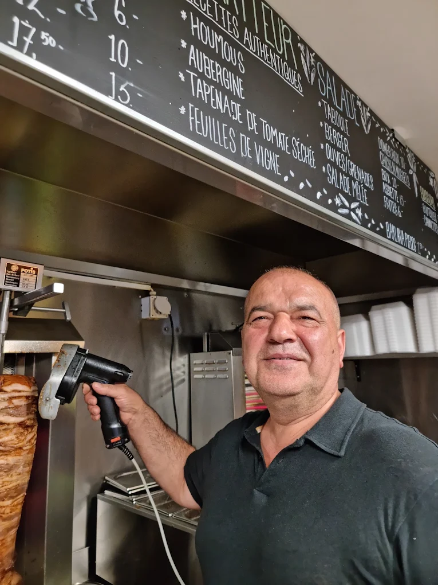

no. 02 — La lame, à la commande
Hüseyin — le père
Il a ouvert avec la recette de son père
Il est arrivé de Gaziantep et il a ouvert un comptoir rue Pré-du-Marché. Tout ce qui se vend ici est fait ici : la broche, les mezze, les sauces. Les recettes viennent de la famille, et il n'a jamais voulu les adapter au goût d'ailleurs. Vingt-huit ans plus tard, c'est toujours vrai.
- Au comptoir depuis
- 1998
- Origine
- Gaziantep